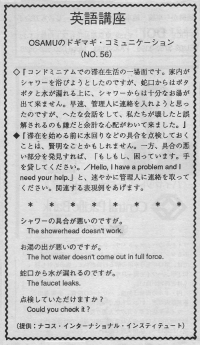

シャワーの具合が悪いのですが。
In the condominum, Osamu's wife wanted to take a shower but water leaked from the faucet. Also, there was hardly any hot water. They wanted to ask the owners about it but if they were afraid to because they didn't want them to think that they broke it. You can tell the owners directly that you didn't break it. Here are some examples: "There's no hot water. We didn't do anything." or "We didn't touch anything. It was already like that."
コンドミニアムでの滞在生活の一場面です。家内がシャワーを浴びようとしたのですが、蛇口からはポタポタと水が漏れる上に、シャワーからは十分なお湯が出て来ません。早速、管理人に連絡を入れようと思ったのですが、へたな会話をして、私たちが壊したと誤解されるのも嫌だと余計な心配がわいて来ました。
滞在を始める前に水回りなどを点検しておくことは賢明なことかもしれません。一方、具合の悪い部分を発見すれば、「困っています。手を貸してください」 Hello, I have a problem and I need your help. と、速やかに管理人に連絡を取ってください。関連する表現例をあげます。
シャワーの具合が悪いのですが。
The Showerhead doesn’t work.
お湯の出が悪いのですが。
The hot water doesn’t come out in full force.
蛇口から水が漏れるのですが。
The faucet leaks.
点検して頂けますか。
Could you check it?

| © 1995-2013 NACOS International Institute. All Rights Reserved. |